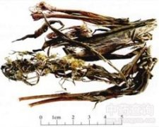

金沸草

拼音
Jīn Fèi Cǎo
别名
金佛草、白芷胡（《分类草药性》），旋复梗、黄花草（《苏州本产药材》），毛柴胡、黄柴胡（《重庆草药》）。
来源
本品为菊科植物条叶旋覆花Inula linariifolia Turcz.或旋覆花Inula japonica Thunb.的干燥地上部分。夏、秋二季采割，晒干。
生境分布
产江苏、四川等地。
药材特点
旋覆花 本种与上二种的区别为：叶线状披针形，边缘反卷，基部渐狭，无小耳。头状花序，直径1.5-2.5cm；总苞片外面有腺，被柔毛。
性状
条叶旋覆花：茎呈圆柱形，上部分枝，长30～70cm，直径0.2～0.5cm；表面绿褐色或棕褐色，疏被短柔毛，有多数细纵纹；质脆，断面黄白色，髓部中空。叶互生，叶片条形或条状披针形，长5～10cm,宽0.5～1cm，先端尖，基部抱茎，全缘，边缘反卷，上表面近无毛，下表面被短柔毛。头状花序顶生，直径0.5～1cm，冠毛白色，长约0.2cm。气微，味微苦。 旋覆花：叶片椭圆状披针形，宽1～2.5cm，边缘不反卷。头状花序较大，直径1～2cm，冠毛长约0.5cm。
性味
苦、辛、咸，温。
功能主治
降气，消痰，行水。用于风寒咳嗽，痰饮蓄结，痰壅气逆，胸膈痞满，喘咳痰多；外治疔疮肿毒。
用法用量
4.5～9g。外用鲜品适量，捣汁涂患处。
化学成分
旋复花地上部分含旋复花素。大花旋复花地上部分含大花旋复花素。
药理作用
1：抗病原微生物作用 金沸草煎剂5mg/ml用原代人胚肌皮单层细胞培养法：表明 对单纯疱疹病毒（I型）有抑制作用[1]
2：全草煎剂用平板纸片法：对金黄色葡萄球菌、肺炎链球菌、绿脓杆菌、大肠杆菌有抑制作用[2]
摘录
《中国药典》